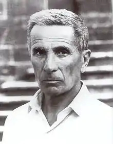
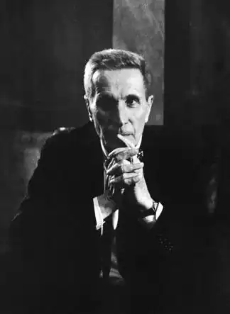

Італійський письменник і драматург, автор романів та оповідань, художник і журналіст міланської газети 'Corriere della Sera ". Світову славу йому приніс роман 'Татарська пустеля "(Il deserto dei Tartari), написаний в 1940 році.
Діно Будзаті народився 16 жовтня 1906 року в фамільної віллі в Сан-Пеллегріно ді Беллуно (San Pellegrino di Belluno), місті в італійському регіоні Венето (Veneto), на півночі країни. Його мати, дочка лікаря і італійської аристократки, ветеринар за фахом, була з Венеції (Venice), а батько, знаменитий адвокат і професор міжнародного права, походив із старовинної сім'ї з Беллуно. Діно був другим з чотирьох дітей в сім'ї. Він з дитинства виявляв безсумнівну увагу мистецтву і музиці, навчався грі на скрипці і фортепіано, проте пізніше відмовився від цих захоплень. Рідні вважали, що світогляд майбутнього письменника сформувала величезна сімейна бібліотека.
У 1924 році він, пішовши назустріч бажанням сім'ї, вступив на юридичний факультет Міланського Університету (University of Milan), де колись викладав його батько. Коли він вивчав юриспруденцію, він став, у віці 22 років, співробітником газети 'Corriere della Sera', в якій працював до кінця життя. Свою журналістську кар'єру Будзаті почав у відділі коректорів, потім працював репортером, спеціальним кореспондентом, писав есе, а також виконував обов'язки редактора і художнього критика. Про нього часто говорили, що журналістський досвід Будзаті був невіддільний від його літературної діяльності, надаючи риси реалізму навіть самим фантастичним історіям. За його власними словами, письменницька фантазія повинна бути якомога ближче до журналістики. Не в тому сенсі, щоб надавати літературі деякі аспекти банальності, хоча і це зазвичай трапляється. Будзаті вважав, що ефект будь-якої вигаданої історії залежить від того, наскільки простим і звичайним мовою її розкажуть. Під час Другої світової війни Діно Будзаті служив в Африці (Africa) в якості журналіста, закріпленого за військово-морськими силами Італії (Italy). Після закінчення війни в Італії був опублікований його роман 'Татарська пустеля', який швидко приніс своєму авторові популярність і визнання критиків. У 1964 році він одружився на Альмерії Антоньяцці (Almeria Antoniazzi) і в тому ж році опублікував написаний роком раніше свій останній роман 'Любов' (Un Amore). Він помер від раку підшлункової залози (це ж захворювання забрало життя його батька) після тривалої хвороби, 28 січня 1972 року в Мілані (Milan). Він був атеїстом. Будзаті почав писати свої романи й оповідання в 1933-му. Його творча спадщина включає в себе п'ять романів, п'єси для театру і радіопостановок, лібрето, а також безліч збірників оповідань і віршів. За його лібрето були створені чотири опери композитора і диригента Лучано Шаї (Luciano Chailly) і опера 'La giacca dannata' Джуліо Віоцці (Giulio Viozzi). У 1945 році з під його пера вийшла книга для дітей під назвою 'Неймовірне навала ведмедів на Сицилію' (La famosa invasione degli orsi in Sicilia). Його твори, який іноді відносять до жанру магічного реалізму, зачіпають такі теми як, соціальне відчуження, самотність і туга, а також доля природи в умовах неприборканого технічного прогресу. В оповіданнях Буццаті нерідко дію фантастичні тварини, в тому числі, і придумані самим автором. Крім того, він був дуже відомим художником, виставляв свої роботи, і об'єднав свій літературний і художній таланти, придумавши комікс, заснований на міфі про Орфея (Orpheus) під назвою 'Poema a fumetti'.